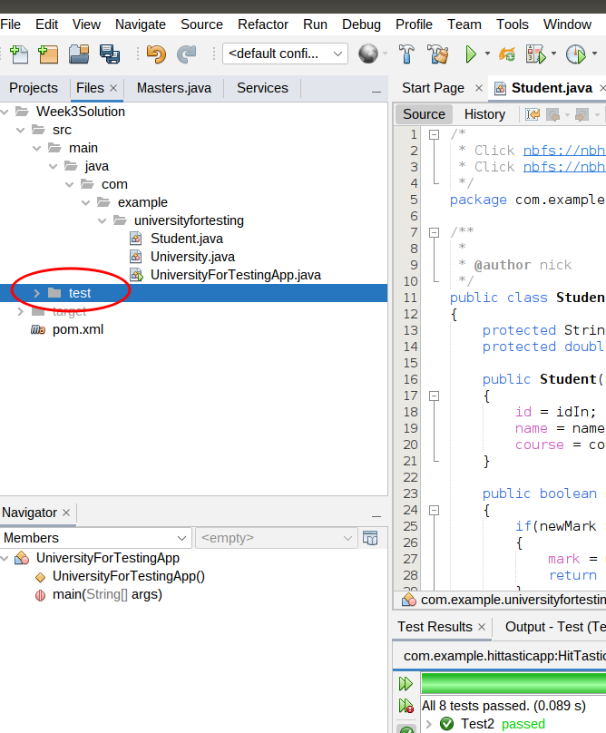

These notes will introduce you to software testing (specifically, unit testing) and how to accomplish it in Java using the JUnit framework.
Obviously it is important to test software before releasing it, to iron out bugs. Software testing can be done in an informal, ad-hoc way, however the disadvantage of this is that the developer is likely to miss out testing crucial functionality. The robustness of the software can be enhanced by taking a more formal approach to testing, by drawing up a test plan documenting all tests and the expected and actual output, as well as performing a series of unit tests designed to test different parts of the system.
A unit test is designed to test one small part of the system in isolation, such as a method. Unit tests are written to test different outcomes of a method. For example, an Event class (used in the live music venue application) might have a book() method which takes the number of tickets to book as a parameter. This could have three outcomes:
public class Event
{
int tickets;
// ... rest of class omitted
public boolean book (int amount)
{
if(tickets < amount)
{
return false;
}
else if (amount <= 0)
{
return false;
}
tickets -= amount;
return true;
}
public int getTickets()
{
return tickets;
}
}
Unit tests for this book() method could involve:
In Java, unit testing is made straightforward by the open-source unit testing framework JUnit. This can be used from Netbeans by adding the required libraries as a dependency to your pom.xml within the <dependencies> section. We are using JUnit 5, as this is the latest version. It requires Java 8 or higher. If you are having problems with JUnit 5, there are also some (older) notes for JUnit 4 here.
<dependency> <groupId>org.junit.jupiter</groupId> <artifactId>junit-jupiter-api</artifactId> <version>5.7.2</version> <scope>test</scope> </dependency> <dependency> <groupId>org.junit.jupiter</groupId> <artifactId>junit-jupiter-engine</artifactId> <version>5.7.2</version> <scope>test</scope> </dependency> <!-- This is needed only if you are doing parameterised tests (see below) --> <dependency> <groupId>org.junit.jupiter</groupId> <artifactId>junit-jupiter-params</artifactId> <version>5.7.2</version> <scope>test</scope> </dependency>To use JUnit 5, you also need to update the Maven Surefire plugin, which is used to automate your tests, to at least version 2.22. Add this to your
pom.xml below the dependencies.
<build> <plugins> <plugin> <artifactId>maven-surefire-plugin</artifactId> <version>2.22.0</version> <configuration> <includes> <include>**/*Tests.java,**/*Test.java</include> </includes> </configuration> </plugin> </plugins> </build>There is a good tutorial at Vogella which was partly used to research these notes.
Imagine you have an Event class above. To use JUnit, we have to create a test class with a series of unit tests. Here is an example of a series of unit tests that you would run with JUnit on the Item class above:
import static org.junit.jupiter.api.Assertions.*;
import org.junit.jupiter.api.Test;
public class EventTest {
// Test that selling one ticket returns true if there are enough tickets
@Test
public void testSellOneTicketSuccess()
{
// Arguments of Event: name, number of tickets
Event e = new Event("Postmodern Doom", 100);
assertTrue( e.book(1) );
}
// Test that selling one ticket reduces the stock appropriately if there are enough tickets
@Test
public void testSellOneTicketReducesStock()
{
Event e = new Event("Postmodern Doom", 100);
e.book(1);
assertEquals( e.getTickets(), 99 );
}
// Test that selling one ticket returns false if there are not enough tickets
@Test
public void testSellOneTicketNoAvailability()
{
Event e = new Event("Postmodern Doom", 0);
assertFalse( e.book(1) );
}
// Test that selling one ticket returns false if the quantity is invalid
@Test
public void testSellOneTicketInvalidQuantity()
{
Event e = new Event("Postmodern Doom", 100);
assertFalse( e.book(-1) );
}
// Test that selling one ticket does not reduce the stock if there are not enough tickets
@Test
public void testSellOneTicketNoAvailabilityDoesNotChangeStock()
{
Event e = new Event("Postmodern Doom", 0);
e.book(1);
assertEquals( e.getTickets(), 0 );
}
// Test that selling one ticket does not change the stock if the quantity is invalid
@Test
public void testSellOneTicketInvalidQuantityDoesNotChangeStock()
{
Event e = new Event("Postmodern Doom", 100);
e.book(-1);
assertEquals( e.getTickets(), 100 );
}
@Test
public void testSellTwoTicketsReducesStock()
{
Event e = new Event("Postmodern Doom", 100);
e.book(2);
assertEquals( e.getTickets(), 98 );
}
}
Looking at this in more detail:
assertTrue() (tests whether a method returns true), assertFalse() (tests whether a method returns false), or assertEquals() (which tests whether a return value is equal to specified value.
Test classes should be placed in the test folder within your project. Right-click on the test folder, as shown below, to add a new test class:

We can write special code to perform common operations before each test or before all tests, and corresponding code to perform common operations after each test and all tests. The former is known as setup and the latter is known as teardown.
Why is this useful? It allows us to create a common system containing a number of objects, and objects within objects, which will be used to run all tests starting from the same state. So for example we can setup a shop containing multiple products, and run each test on the shop in this state.
We can use a number of annotations to do this:
@BeforeEach - specifies a method to run before each test.@BeforeAll - specifies a method to run before all tests.@AfterEach - specifies a method to run after each test.@AfterAll - specifies a method to run after all tests.For example, we could set up a Shop with Products in a @BeforeEach annotated method:
import org.junit.jupiter.api.Test;
import org.junit.jupiter.api.BeforeEach;
public class ProductTest {
Shop shop;
Product p1, p2;
@BeforeEach
public void setupShop() {
shop = new Shop();
p1 = new Product("1278", "Bread", "Organic Bread Ltd", 0.79);
p2 = new Product("5901", "Cheese", "Griswold Farms Ltd", 1.79);
shop.addProduct(p1);
shop.addProduct(p2);
}
@Test
public void testFindProductById() {
Product p = shop.findProductById("1278");
assertEquals(p, p1);
}
...
When is @BeforeAll useful? It's useful for expensive operations, which we want to run only once, before all tests are run (as opposed to each individual test). A good example would be connecting to the database. The @BeforeAll method has to be marked as static, indicating that it applies to the test class as a whole, rather than specific instances of it. This also means that any object(s) that the method need to be declared as static. An example is given below; this also shows the use of @AfterAll to implement a tear-down method to close the connection.
import org.junit.jupiter.api.Test;
import org.junit.jupiter.api.BeforeAll;
import org.junit.jupiter.api.AfterAll;
import java.sql.Connection;
import java.sql.DriverManager;
import java.sql.SQLException;
public class ProductTest {
static Connection connection = null;
@BeforeAll
public static void setupConnection() {
try {
connection = DriverManager.getConnection("jdbc:sqlite:....");
} catch (SQLException e) {
// ...
}
}
@AfterAll
public static void tearDownConnection() {
try {
if(connection != null) {
connection.close();
}
} catch (SQLException e) {
// ...
}
...
Often, tests differ only in the parameter we are supplying to the method. You can see this above in the tests within EventTest; most only differ by the amount of tickets we are supplying. Clearly this is rather inefficient. It would be better if we could run a single test with
one or more parameters - and luckily we can. The example below has a single test, testSellMultipleValues()
and runs it three times, passing the parameters -1, then 1, then 2 to it:
import static org.junit.jupiter.api.Assertions.*;
import org.junit.jupiter.api.Test;
import org.junit.jupiter.params.ParameterizedTest;
import org.junit.jupiter.params.provider.MethodSource;
public class ParamItemTest {
public static int[][] testData()
{
int[][] data = { { -1 } , { 1 } , { 2 } } ;
return data;
}
@ParameterizedTest
@MethodSource(value="testData")
public void testSellMultipleValues(int[] data)
{
int maxTickets = 100;
Event event = new Event("Test event", maxTickets);
int expectedTickets = data[0] > 0 ? maxTickets - data[0] : maxTickets;
event.sell(data[0]);
assertEquals( event.getTickets(), expectedTickets );
}
}
Note the following:
testData() method. This provides the parameters to send to the test. It creates and returns a two-dimensional int array (int[][]) of the parameters to send to the test.
@Parameters
public static int[][] testData()
{
int[][] data = { { -1 } , { 1 } , { 2 } } ;
return data;
}
This method returns an array of parameters to test: the test method will be run with each parameter in the array in turn.
The data: int[][] data = { { -1 } , { 1 } , { 2 } } ; is a two-dimensional array
of parameters. Each member of the array data corresponds to the parameters to test each time, but
each member is itself an array so that we can send multiple parameters to the test. Here, however, we're only sending one parameter to the test so each
member of testData is an array with one member - the parameter to test.testSellMultipleValues() method. This is annotated with @ParameterizedTest to indicate that it's a parameterised test, and another annotation @MethodSource to indicate where the test data is coming from. @MethodSource(value="testData")indicates the data is coming from a method called
testData(). The current item from the test data is passed to the testSellMultipleValues() method; it will be an int array (int[]) containing one single value.int expectedTickets = data[0] > 0 ? maxTickets - parameter : maxTickets;This is saying "if
data[0] (i.e. the number of tickets we want to sell) is greater than 0, set expectedTickets to maxTickets - data[0], otherwise set it to maxTickets".getTickets() is the expected number.The following example is a modification of the previous one, which takes multiple parameters per test run. We specify these via a CSV source this time:
import static org.junit.jupiter.api.Assertions.*;
import org.junit.jupiter.api.Test;
import org.junit.jupiter.params.ParameterizedTest;
import org.junit.jupiter.params.provider.CsvSource;
public class ParamItem2Test {
@ParameterizedTest
@CsvSource({"-1,false","1,true","2,true","101,false"})
public void testSellMultipleValuesSuccess(int numberOfTickets, boolean expectedSellStatus)
{
Event event = new Event("Test event", 100);
assertEquals(event.sell(numberOfTickets), expectedSellStatus);
}
@ParameterizedTest
@CsvSource({"-1,100","1,99","2,98","101,100"})
public void testSellMultipleValuesRemainingQuantity(int numberOfTickets, int expectedRemainingTickets)
{
Event event = new Event("Test event", 100);
event.sell(numberOfTickets);
assertEquals(event.getTickets(), expectedRemainingTickets);
}
}
Note how we pass the test data to each test in comma-separated (CSV) format with @CsvSource, e.g:
@CsvSource({"-1,false","1,true","2,true","101,false"})
The CsvSource contains a set of test data to be used for each run of the test, as a CSV string. For the first test, testSellMultipleValuesSuccess(), we are testing whether the sell() method returns the expected boolean value when a particular number of copies are sold. The CSV contains the copies to be sold, and the expected boolean return value of sell() for that number of copies, in that order. The parameters to the method (numberOfTickets and expectedSellStatus) correspond to this data from the CSV, in the same order.
So here, the test will be run four times, the first time with the values of -1 and false; the second time with the values of 1 and true, and so on.
The testSellMultipleValuesRemainingQuantity() method works in a similar way, but this time we are testing that the remaining number of tickets is as we expect for each run of the test.
The test data in the CSV contains these cases:
sell() should return false as -1 is an invalid quantity, and not change the remaining tickets (so this remains as 100).sell() should return true and leave 99 remaining tickets.sell() should return true and leave 98 remaining tickets.sell() should return false due to attempting to sell one more than the maximum available number of tickets, and as a result not change the remaining tickets (so this remains as 100).
Note how the two tests work. The first test tries to sell numberOfTickets tickets (the first parameter of the test) and checks that the return value of sell is equal to expectedSellStatus (the second parameter of the test). The second test tries to sell numberOfTickets tickets and checks that the number of remaining tickets is equal to expectedRemainingTickets (the second parameter of the test).
This is an example of testing a more complex class (the Venue, which contains multiple Events). Not all possible tests are shown. As discussed below, you should test more complex classes, such as Venue, after the simpler classes (such as Event) are fully tested and working.
import static org.junit.jupiter.api.Assertions.*;
import org.junit.jupiter.api.Test;
public class VenueTest {
@Test
public void testAddEvent()
{
int id = 1;
Venue v=new Venue();
v.addEvent(new Event(id, "Postmodern Doom","1/4/23", 1000));
assertNotNull(v.findEventById(id));
}
@Test
public void testFindOneEventByName()
{
Venue v = new Venue();
int id = 1;
String name = "Postmodern Doom";
Event e = new Event(id, name, "1/4/23", 1000);
v.addEvent(e);
ArrayList<Event> events = v.findEventsByName(name);
assertEquals(events.size(), 1);
}
@Test
public void testFindTwoEventsByName()
{
Venue v = new Venue();
int id = 1;
String name = "Postmodern Doom";
Event e = new Event(id, name, "1/4/23", 1000);
Event e2 = new Event(id+1, name, "2/4/23", 1000);
v.addEvent(e);
v.addEvent(e2);
ArrayList<Event> events = v.findEventsByName(name);
assertEquals(events.size(), 2);
}
@Test
public void testFindNonExistentEventByName()
{
Venue v = new Venue();
int id = 1;
String name = "Postmodern Doom";
Event e = new Event(id, name, "1/4/23", 1000);
v.addEvent(e);
ArrayList<Event> events = v.findEventsByName("Metagalactic Hamstaaz");
assertEquals(events.size(), 0);
}
@Test
public void testFindNonExistentEventById()
{
Venue v = new Venue();
int id = 1;
String name = "Postmodern Doom";
Event e = new Event(id, name, "1/4/23", 1000);
v.addEvent(e);
assertNull(v.findEventById(id+1));
}
}
You should test each class as you write it. A good strategy is to test the simpler classes, with no dependencies on other classes, first, as then you know that those classes are fully working. For example, you would want to test the Event class and a Booking class before testing the Venue class. After testing the classes with no dependencies, you can then test the larger and more complex classes (e.g. Venue), which use those simpler classes, to see if they work.
You should also ensure you test edge cases. An edge case is a value on the boundary between two outcomes. For example, if a venue has 100 tickets, you might want to test whether 100 tickets can be booked (which should work), and whether 101 tickets can be booked (which should not). Edge cases are common places to find bugs (one example is confusion between < and <=) and ensuring they are included as data in tests means that such bugs are likely to be found.
Clone this repository from GitHub:
https://github.com/nwcourses/COM528This contains the solutions to previous exercises, but also a project called
UniversityForTesting, which you should use for this exercise. It contains a modified version of the Week 3 solution. Look at the classes within the project.
Develop a series of unit tests for both the Student class and the University class, and run them. You should include both normal and error conditions in the tests. In the latter case, check that the expected error occurs if you try to pass invalid data into the relevant methods.
Please note: